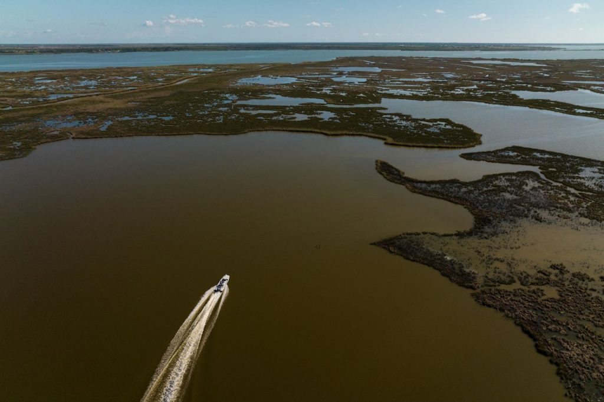
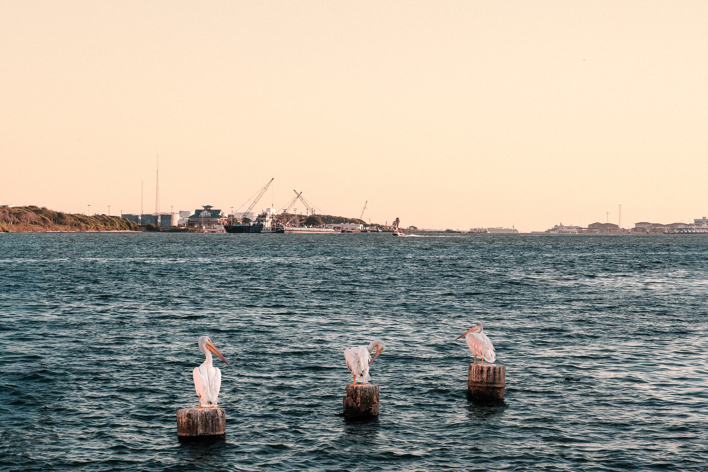
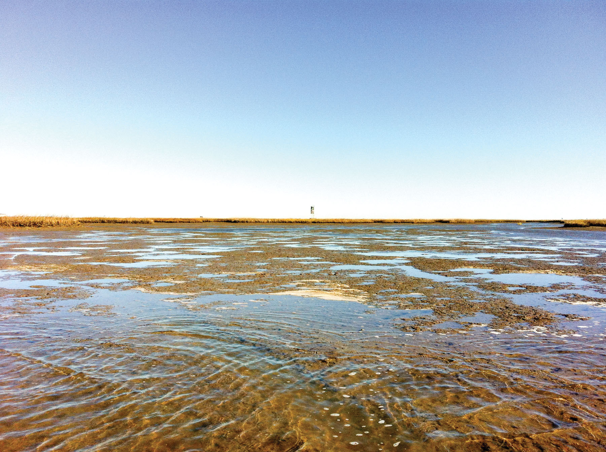
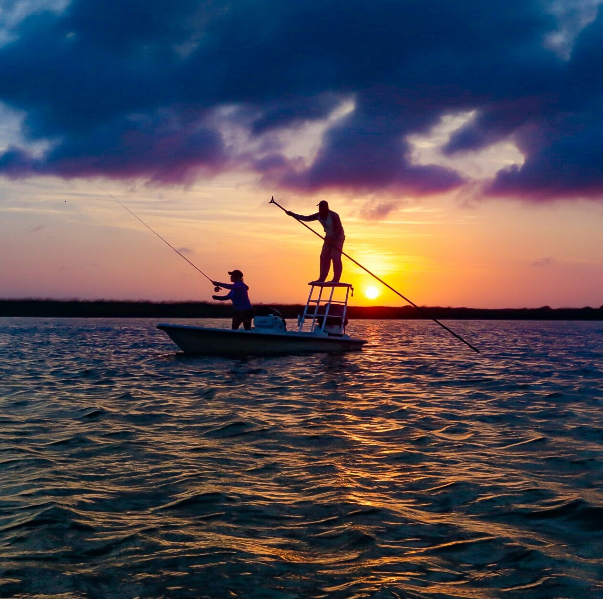

© Texas Saltwater Fishing MagazineArea & Geography
Explore the vast waters and winding channels of Galveston Bay, where freshwater from the Trinity and San Jacinto Rivers meets the Gulf of Mexico. Paddle through marshes, glide across open waters, and discover hidden coves teeming with wildlife. Every turn reveals a new view, from quiet tidal flats to sunlit oyster reefs.
Get ready to experience the bay's dramatic contrasts, from wide open expanses to narrow twisting waterways. Watch the tides shift and the wildlife come alive, making each visit a unique adventure. Photographers and nature lovers alike will find endless opportunities to capture the beauty of this dynamic ecosystem.

© Galveston Bay FoundationNature & Ecosystem
Step into one of Texas' most vibrant ecosystems, home to hundreds of bird, fish, and plant species. Spot herons hunting along the shore, pelicans diving into the water, and egrets standing tall in the marshes. Discover oyster reefs and seagrass beds that shelter countless species and keep the bay healthy.
Join guided tours or follow nature trails to get closer to wildlife and learn about the delicate balance of this ecosystem. From open waters to dense marshes, the bay invites you to explore, observe, and connect with nature in an unforgettable way.

© Bay Flats LodgeCoastline & Challenges
Walk, kayak, or boat along Galveston Bay's ever-changing coastline and see how tides, storms, and shifting sediments shape the landscape. Discover hidden marshes, peaceful channels, and scenic overlooks that showcase the bay's natural beauty.
Learn about the challenges this ecosystem faces, from erosion to rising seas. Join conservation efforts or simply witness how local initiatives are protecting wildlife and restoring wetlands. Every visit offers a chance to experience nature while understanding the importance of preserving this unique environment.

© Travel TexasEconomy & Human Impact
Experience the ways humans and nature coexist along Galveston Bay. Fishing, boating, and wildlife tours provide exciting outdoor activities while supporting local communities. Explore the bay and see how its natural resources sustain livelihoods and recreational adventures.
Understand the impact of pollution and urban development while witnessing the ongoing efforts to protect and restore habitats. By exploring responsibly, visitors can enjoy the beauty of the bay while supporting conservation and sustainable tourism.
Activities &
Adventures
Discover the many ways to experience Galveston Bay, from quiet paddle routes through the marshes to world-class fishing on open water.


Bay Gallery
 © NASA / USGS
© NASA / USGS
 © The Conversation
© The Conversation
 © Galveston Chamber of Commerce
© Galveston Chamber of Commerce